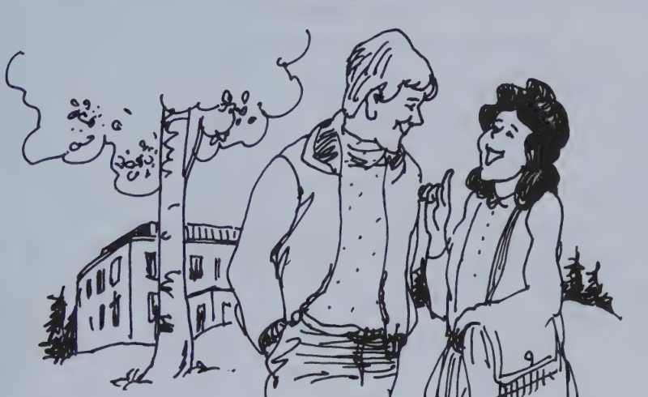
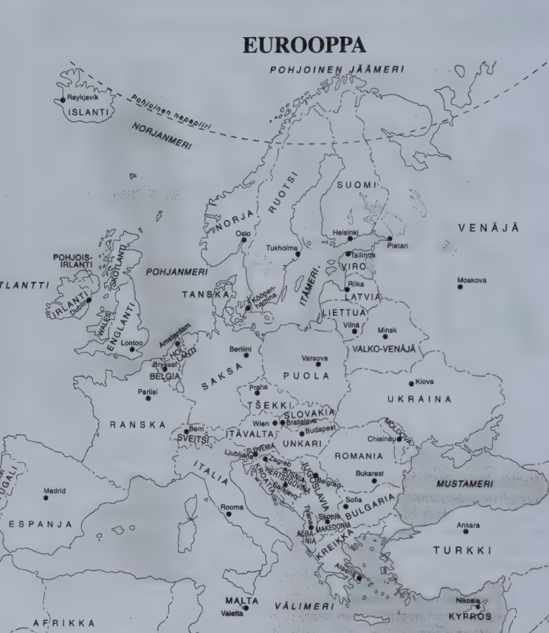
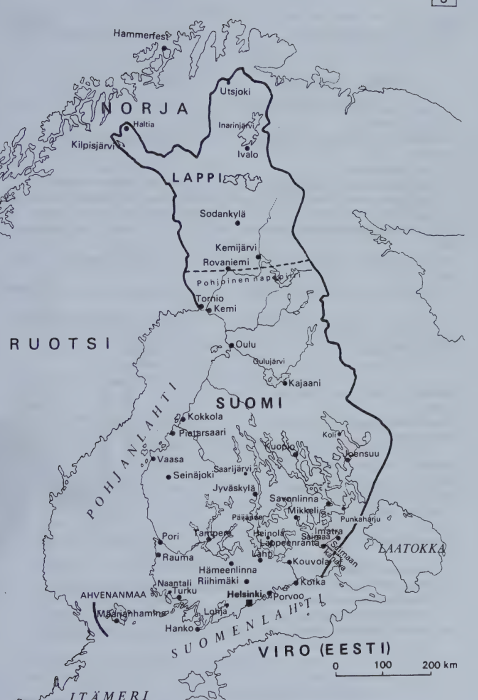
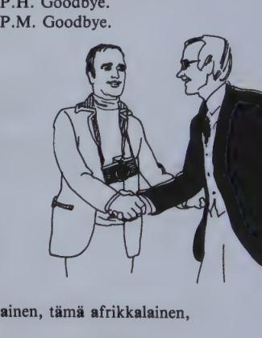
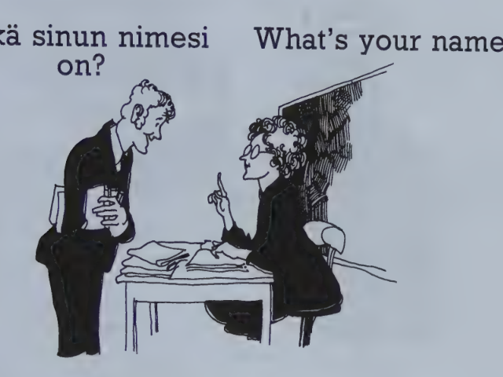

Kappale 3 / Lesson 3#
Hei, Meg! / Hello, Meg!#
Suomi |
English |
|---|---|
1. Pekka Oksa. Hei! Minä olen Pekka Oksa. Minä olen suomalainen. |
1. P.O. Hello! I’m Pekka Oksa. I’m Finnish. |
2. Meg Smith. Minä olen Meg Smith. Meg, tai Margaret. |
2. M.S. I’m Meg Smith. Meg, or Margaret. |
3. P. Sinä olet ulkomaalainen. Oletko sinä amerikkalainen? |
3. P. You are a foreigner. Are you American? |
4. M. Olen. Puhutko sinä englantia? |
4. M. Yes, I am. Do you speak English? |
5. P. Puhun. Puhutko sinä ranskaa? |
5. P. Yes, I do. Do you speak French? |
6. M. En (puhu). Minä puhun vain englantia. Ja vähän suomea. |
6. M. No, I don’t. I only speak English. And a little Finnish. |
7. P. Sinä puhut hyvin suomea. |
7. P. You speak Finnish well. |
8. M. Kiitos! |
8. M. Thank you! |
Mikä päivä tänään on?
Tänään on keskiviikko. Eilen oli tiistai.
Kuvat / Figures#

Eurooppa#

Suomi |
English |
|---|---|
Maa |
Country |
Kieli |
Language |
Englanti |
England |
englanti |
English |
but: Puhun englantia. |
but: I speak English. |
Suomi |
Finland |
suomi |
Finnish |
suomea. |
Finnish. |
Ranska |
France |
ranska |
French |
ranskaa. |
French. |
Minkämaalainen sinä olet?
Minä olen ranskalainen.
Mitä kieltä sinä puhut?
Minä puhun ranskaa.
Suomi#

Kielioppia / Structural notes#
1. Present tense of verb: 1st and 2nd person#
Finnish |
English |
|---|---|
(minä) ole/n |
I am |
(sinä) ole/t |
you are |
(minä) puhu/n |
I speak, I am speaking |
(sinä) puhu/t |
you speak, you are speaking |
minä, sinä are usually omitted in written Finnish, unless there is a special emphasis on the pronouns. In speech they are extensively used.
Short colloquial forms of minä and sinä are mä and sä: mä puhun; mä oon = minä olen; sä puhut; sä oot = sinä olet; oot(ko) sä? = oletko sinä?
The complete present tense will be discussed in lesson 10:2 (affirmative) and 12:2 (negative).
All inflected forms of Finnish verbs and nouns consist, like those above, of two parts,
stem + ending
ole- -n
-t
The stem is the unchanging part that carries the meaning, whereas each form has a different ending of its own.
2. How to answer “yes” and “no”#
Finnish |
English |
|---|---|
Oletko (sinä) japanilainen? |
Are you Japanese? |
Olen (kyllä). |
Yes, I am. |
Kyllä (olen). |
Yes, I am. |
En (ole). |
No, I am not. |
Onko tämä hyvä auto? |
Is this a good car? |
On (kyllä). |
Yes, it is. |
Kyllä (on). |
Yes, it is. |
Ei (ole). |
No, it is not. |
The most common way to give a short affirmative answer is to repeat the verb of the question. kyllä occurs less frequently alone; however, it often combines with the verb to add some emphasis to the answer.
The negation “no” is en for the 1st pers. and ei for the 3rd pers. sing. The verb often combines with the negation: en ole, en puhu/ei ole, ei puhu.
In casual every-day speech joo is commonly heard in affirmative answers: Puhut(ko) sä englantia? - Joo.
Sanasto / Vocabulary#
Finnish |
English |
|---|---|
amerikkalainen |
American |
en |
no, I … not, I don’t |
Englanti |
England (often used loosely to mean Britain) |
englanti (englantia) |
English (language) |
englantilainen |
English (British), Englishman, Englishwoman |
hei! |
hello, hi, cheerio |
hyvin |
well; very |
kiitos |
thank you, thanks |
minä (colloq. mä) |
I |
mitä? (from mikä?) |
what? |
puhu/a (puhun, puhut) |
to speak, talk |
sinä (colloq. sä) |
you (sing.) |
suomalainen |
Finn, Finnish |
suomi (suomea) |
Finnish (language) |
tai |
or |
ulko/maalainen |
foreigner |
vain |
only, just |
vähän |
(a) little |
New words in structural notes, reader, exercises etc.#
Finnish |
English |
|---|---|
eilen |
yesterday |
kartta |
map |
keski/viikko |
Wednesday |
kieli (kieltä) |
language, tongue |
kyllä |
yes; also used as an emphasizing word |
maa |
country, land; earth; ground; soil |
minkä/maalainen? |
from what country? |
oli |
was |
Ranska |
France |
ranska (ranskaa) |
French (language) |
ranskalainen |
French, Frenchman, Frenchwoman |
Kappale 4 / Lesson 4#
Hyvää päivää / How do you do#
Suomi |
English |
|---|---|
1. Pekka Mäki. Hyvää päivää. Minä olen Pekka Mäki. |
1. P.M. How do you do. I’m Pekka Mäki. |
2. Peter Hill. Hyvää päivää. Minä olen Peter Hill. |
2. P.H. How do you do. I’m Peter Hill. |
3. P.M. Mitä kuuluu? |
3. P.M. How are you? |
4. P.H. Kiitos, hyvää. Entä teille? |
4. P.H. Fine, thanks. And you? |
5. P.M. Hyvää vain. Te olette ulkomaalainen. Oletteko te englantilainen? |
5. P.M. Just fine. You’re a foreigner. Are you English? |
6. P.H. En (ole). Minä olen kanadalainen. |
6. P.H. No, I’m not. I’m Canadian. |
7. P.M. Te puhutte oikein hyvin suomea. |
7. P.M. You speak Finnish very well. |
8. P.H. Kiitos. Puhutteko te englantia? |
8. P.H. Thank you. Do you speak English? |
9. P.M. Kyllä, minä puhun englantia, mutta huonosti. |
9. P.M. Yes, I speak English, but badly. |
10. P.H. Näkemiin. |
10. P.H. Goodbye. |
11. P.M. Näkemiin. |
11. P.M. Goodbye. |
Televisio on hyvä, mutta radio on huono.
Puhun hyvin englantia, mutta huonosti suomea.
Englanti - englantilainen
Suomi - suomalainen
Ruotsi - ruotsalainen
Venäjä - venäläinen
Helsinki - helsinkiläinen
Liverpool - liverpoolilainen
ä tämä päivä, näkemiin
ä-a vähän vanha, vain vähän, tämä amerikkalainen, tämä afrikkalainen,
tämä aasialainen, tämä kaunis päivä
u puhun, puhutte, kuuluu, uusi
u-y puhun kyllä, kyllä puhun, puhut hyvin, hyvä kuva, hyvin uusi,
kuuluuko hyvää? kyllä, hyvää kuuluu
Mikä päivä tänään on?
Tänään on torstai. Eilen oli keskiviikko.
Kuva#

Kielioppia / Structural notes#
1. Formal and informal “you”#
The pronoun te is always used when addressing many persons:
Finnish |
English |
|---|---|
Ole/tte/ko te Mary ja John Smith? |
Are you Mary and John Smith? |
Te puhu/tte hyvin suomea. |
You speak Finnish well. |
One person is addressed with sinä in informal speech - with relatives and friends, children and young people, and within various kinds of closed groups - and with te in formal speech. If you use a person’s title and family name, use te; if you call someone by his first name, use sinä. (sinä is far more common than “tu” in French or “du” in German.)
Finnish |
English |
|---|---|
Kuka sinä ole/t? Minä olen Liisa (Salo). |
Who are you? I’m Liisa (Salo). |
Kuka te ole/tte? Minä olen professori Viisas. |
Who are you? I’m Professor Viisas. |
Puhu/tko sinä saksaa, Liisa? |
Do you speak German, Liisa? |
Puhu/tte/ko te saksaa, professori Viisas? |
Do you speak German, Professor Viisas? |
te is omitted in written Finnish like minä and sinä.
2. Vowel harmony#
Due to a pattern of sounds called vowel harmony, Finnish words may have two parallel suffixes or endings.
If the stem part of the word contains a back vowel (a, o, u), back vowels will also appear in the suffix or ending:
Finnish |
English |
|---|---|
poika |
boy |
poika/ko? |
a boy? |
Englanti |
England |
englanti/lainen |
English(man) |
Otherwise the suffix or ending will have a front vowel (ä, ö, y):
Finnish |
English |
|---|---|
sinä |
you |
sinä/kö? |
you? |
Töölö |
(a district of Helsinki) |
töölö/läinen |
resident of Töölö |
Helsinki |
Helsinki |
helsinki/läinen |
resident of Helsinki |
se |
it; the, that |
se/kö nainen? |
that woman? |
In compound words, the last component decides whether a back or front vowel must be used:
Finnish |
English |
|---|---|
Kööpen/hamina |
Copenhagen |
kööpen/hamina/lainen |
resident of Copenhagen |
Sanasto / Vocabulary#
Finnish |
English |
|---|---|
entä? |
what about? how about? and? |
entä (mitä kuuluu) sinulle/teille? |
and how are you? |
huonosti |
badly, poorly |
(hyvää) päivää |
how do you do (lit. “good day”) |
kanadalainen |
Canadian |
kuuluu: mitä (sinulle/teille) kuuluu? |
how are you (“what’s the news?”) |
-lainen (-läinen) |
suffix denoting “native or resident of an area” |
mutta |
but |
näkemiin (from nähdä to see) |
goodbye, so long, I’ll see you |
oikein |
right, correctly; very |
te |
you (pl. and formal) |
New words in structural notes, reader, exercises etc.#
Finnish |
English |
|---|---|
herra |
Mr.; gentleman |
kaikki |
everything, all; all people, everybody |
rouva |
Mrs., madam; (older) lady |
ruotsalainen |
Swedish, Swedish |
Ruotsi |
Sweden |
tohtori (abbr. tri) |
doctor |
torstai |
Thursday |
Venäjä |
Russia |
venäläinen |
Russian |
Kappale 5 / Lesson 5#
Mikä sinun nimesi on? / What’s your name?#

Uusi opiskelija tulee kurssille / A new student comes to the course#
Suomi |
English |
|---|---|
1. Opiskelija. Päivää. Minä olen uusi opiskelija. |
1. Student. How do you do. I’m a new student. |
2. Opettaja. Päivää. Mikä sinun nimesi on? |
2. Teacher. How do you do. What’s your name? |
3. A. Andy Powell. |
3. A. Andy Powell. |
4. O. Anteeksi, kuinka? |
4. T. I beg your pardon? |
5. A. Minun etunimeni on Andy, A-n-d-y, ja minun sukunimeni on Powell, P-o-w-e-l-l. |
5. A. My first name is Andy, A-n-d-y, and my family name is Powell, P-o-w-e-l-l. |
6. O. Ole hyvä ja kirjoita se. Kiitos. Mikä sinun osoitteesi on? |
6. T. Please write it down. Thank you. What’s your address? |
7. A. Minun osoitteeni on Kalevankatu 10 A 17. |
7. A. My address is Kalevankatu 10 A 17. |
8. O. Ja sinun puhelinnumerosi? |
8. T. And your telephone number? |
9. A. Minun puhelinnumeroni on yksi-kaksi-kolme-neljä-viisi-nolla. |
9. A. My telephone number is one-two-three-four-five-zero. |
10. O. Ja mikä sinun kotimaasi on? |
10. T. And what’s your home country? |
11. A. Minun kotimaani on Australia. |
11. A. My home country is Australia. |
12. O. Tervetuloa kurssille. Ole hyvä ja istu. |
12. T. Welcome to the course. Please sit down. |
Suomi |
English |
|---|---|
Mikä teidän nimenne on? |
What’s your name? |
Minun nimeni on Anna Virtanen. |
My name is Anna Virtanen. |
Mikä teidän osoitteenne on? |
What’s your address? |
Entä teidän puhelinnumeronne? |
And your telephone number? |
Mikä päivä tänään on? Tänään on lauantai.
Eilen oli perjantai. Huomenna on sunnuntai.
Kielioppia / Structural notes#
1. Possessive suffixes for “my”, “your”#
Finnish |
English |
|---|---|
(minun) talo/ni |
my house |
(minun) nime/ni |
my name |
(sinun) talo/si |
your house |
(sinun) nime/si |
your name |
(teidän) talo/nne |
your house |
(teidän) nime/nne |
your name |
To express the idea indicated in English by possessive pronouns, Finnish uses possessive suffixes: -ni my, -si and -nne your. The pronouns minun (gen. of minä), sinun (gen. of sinä) and teidän (gen. of te) are also often added in speech but omitted in written Finnish, unless they carry emphasis.
minun also means “mine”, sinun “yours”, teidän “yours”:
Finnish |
English |
|---|---|
Onko tuo auto sinun/teidän? |
Is that car yours? |
Se huone on minun. |
That room is mine. |
In casual every-day speech, particularly in the Helsinki area, possessive suffixes are often dropped. Note also the short colloquial forms of the pronouns:
mun auto = (minun) autoni
sun osoite = (sinun) osoitteesi
teidän nimi = (teidän) nimenne
More about possessive suffixes in 29:1, 2 and 40:1.
2. Informal imperative (affirmative)#
The imperative expresses an order or a request.
Finnish |
English |
|---|---|
Puhu suomea, Bill! |
Speak Finnish, Bill! |
Ole hyvä ja istu, Liisa! |
Please (lit. “be good and”) sit down, Liisa! |
The informal imperative (imperative sing.) is used when speaking to a child, young person, relative, friend etc. whom you call sinä. It is formed by dropping the ending -n of the 1st person present tense:
Finnish |
English |
|---|---|
puhu/n |
I speak |
puhu! |
speak! |
kirjoita/n |
I write |
kirjoita! |
write! |
More about the imperative in 7:2, 30:1.
Sanasto / Vocabulary#
Finnish |
English |
|---|---|
anteeksi |
excuse me, pardon me, I’m sorry |
ei (se) mitään |
never mind |
etu/nimi |
first name, Christian name |
istu/a (istun istut istutte) |
to sit (down) |
kirjoitta/a (kirjoitan kirjoitat kirjoitatte) |
to write |
koti |
home |
kuinka? |
how? |
kurssi |
course |
nimi |
name |
nolla |
0, nought, zero |
ole hyvä! |
please; here you are; help yourself (informally to one person) |
opettaja |
teacher, instructor |
opiskelija |
student |
osoite |
address |
puhelin |
telephone |
suku |
family, relatives |
terve/tuloa! |
welcome, glad to see you here |
tul/la (tulen tulet tulette) |
to come; to become |
New words in structural notes, reader, exercises etc.#
Finnish |
English |
|---|---|
huomenna |
tomorrow |
kahvi |
coffee |
lauantai |
Saturday |
musiikki |
music |
otta/a (otan otat otatte) |
to take |
perjantai |
Friday |
sano/a (sanon sanot sanotte) |
to say |
soitta/a (soitan soitat soitatte) |
to play; to ring; to phone, call |
sunnuntai |
Sunday |
tanssi/a (tanssin tanssit tanssitte) |
to dance |